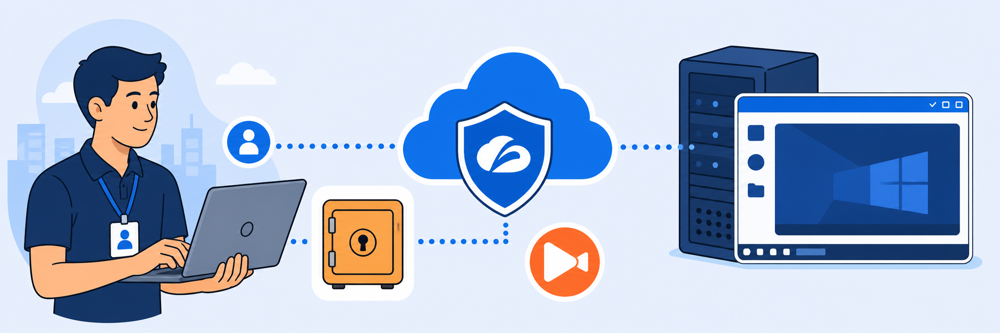

Lab 5: ZPA AppProtection
Scenario: You are a security engineer responsible for protecting internal web applications from common vulnerabilities such as SQL injection and cross-site scripting (XSS). You configure Zscaler Private Access (ZPA) AppProtection to inspect traffic and enforce security controls for the Damn Vulnerable Web App (DVWA).
- Configure application segments and access policies for protected resources.
- Create AppProtection profiles to manage security posture and enforcement levels.
- Apply AppProtection policies to specific application segments.
- Validate security enforcement and monitor violations through diagnostics.

In this task, you create the DVWA application segment, define its access policy, and add the DNS record that points to the DVWA container.
- On Corp Client PC 1, open the Experience Center portal, type
Application Segmentsin the Search menu and select the matching option. - Select Add Application Segment.
- Configure the application segment.
- Enter the following values:
- Name:
DVWA - Applications:
dvwa-<XYZ>.patraining.safemarch.comNote: XYZ is the last 3 digits of the tenant assigned to you. For example, if your tenant is ZS000205, the application name is
dvwa-205.patraining.safemarch.com. Use the same value for the DNS record in Step 9. - Access Type: Browser Access and AppProtection
- Certificate Type: Managed
- Under External URL: Domain Prefix
dvwa; Domain Suffix: select any one from the drop-down - Under Internal URL: Protocol
HTTP; Port80 - Under Client Connector Access: Default Port Ranges Web Server
- Name:
- Select Next.
- Select the segment group: Name
CorpApps; Status Enabled. - Select Next.
- Select the server group: Name
CorpServers. - Select Next.
- Review and save the configuration.
- Enter the following values:
- Verify the settings and select Save.
- After you save, in the Add Application Segment window, select Edit Policy.
- Create the access policy rule.
- Select Add Rule and configure:
- Rule Name:
dvwa_allow_policy - Rule Action: Allow Access
- Rule Name:
- Define the criteria: select Applications and choose the DVWA application segment.
- Select Add Rule.
- Select Add Rule and configure:
- On the Corp Win Svr 2025 VM, open Server Manager, select Tools in the top-right corner, and select DNS to open DNS Manager.
- In the left panel of DNS Manager, expand Forward Lookup Zones under the server to find patraining.safemarch.com. Right-click the zone and select New Host (A or AAAA).
- In the New Host window, enter:
- Name:
dvwa-XYZ(XYZ is the last 3 digits of the tenant assigned to you) - Fully Qualified Domain Name (FQDN): populated automatically from the name
- IP address:
10.0.0.128
Note: The DVWA application runs in a Docker container (10.0.0.128), so you add a DNS entry that directs the traffic to the container running DVWA.
- Name:
- Select Add Host to add the entry.
- Verify that the entry was added successfully.
Note: After you add the DNS entry on Win Svr 2025, it can take 3–5 minutes for the change to take effect.
In this task, you create the AppProtection profile that the DVWA policy will use, starting in report-only mode.
- Create the profile.
- In the Experience Center, type
Protection Profilesin the Search menu and select the matching option (Private Access > Private App Protection > Policy). - On the App Protection tab, select Add (+).
- Configure the profile: Name
DVWA_Protection_Profile; Description optional. - Select Next.
- On the Controls tab, select OWASP_CRS/4.8.0 from the OWASP Predefined Controls drop-down, then select all the OWASP Predefined Controls.
- In the same way, select all controls on the ThreatLabZ Controls, WebSocket Controls and API Controls tabs.
- Select Next.
- Set the Predefined Paranoia Level to
3, then select Next.Note: Higher paranoia levels run checks with a wide net of matches, which increases the potential for false positives. Lower paranoia levels run checks with a precise set of matches, resulting in fewer false positives.
- Configure the Override Controls:
- Alternate Action: Override All Controls
- Set Transaction to Allow for the OWASP Predefined, WebSocket, ThreatLabZ, API and Active Directory controls.
- Select Next, then Save.
- In the Experience Center, type
In this task, you apply the protection profile to the DVWA application segment and enable inspection.
- In the Experience Center, type
App Protection Policyin the Search menu and select the matching option (Private Access > Private App Protection > Policy). - Create the AppProtection policy.
- Select Add Rule (+).
- Configure the policy:
- Name:
DVWA_AppProtection_policy - Description: optional
- Rule Action: Inspect
- AppProtection Profile:
DVWA_Protection_Profile(created in Task 5.2)
- Name:
- Select Add Criteria › Applications, and choose the DVWA application segment.
- Select Add Rule.
In this task, you run sample attacks to verify logging, then update the protection profile to block those attacks.
- Access DVWA through Browser Access.
- Log out of Zscaler Client Connector (ZCC).
- On Corp Client PC 1, open a browser and sign in to the Experience Center tenant at
console.zscaler.comwith the credentials provided to you. - Type
Browser Accessin the Search menu and select the matching option (Zero Trust Browser > Web Access). - Copy the External Domain of the application whose internal domain is
dvwa-XYZ.patraining.safemarch.com. - Open a new browser window, paste the External Domain, and authenticate with your lab access credentials.
- Sign in to DVWA with Username
adminand Passwordpassword.
- Initialise the DVWA database.
- Scroll down and select Create / Reset Database.
- After the reset completes, sign in to DVWA again.
- Perform a SQL injection test (expected: allowed and logged).
- In DVWA, go to SQL Injection.
- In the User ID field, enter:
1' or '1'='1 - Select Submit.
Note: The attack succeeds because the profile's transactions are set to Allow (report mode).
- Perform a stored XSS test (expected: allowed and logged).
- In DVWA, select XSS (Stored).
- Enter the following values:
- Name:
JSAttack - Message:
<script>alert("You've been HACKED!")</script>
- Name:
- Select Sign Guestbook.
- Verify violations in Private Application Diagnostics.
- In the Experience Center, type
Private Diagnosticsin the Search menu and select the matching option (Data Explorer > Private Access). - Set the Log Type to AppProtection.
- Scroll to Security Profile Violations to view the logged events.
- Confirm that the protection profile allowed the attack to reach the application through ZPA.
- In the Experience Center, type
- Update the protection profile to block, then re-test.
- In the Experience Center, type
Protection Profilesin the Search menu and select the matching option. - Edit DVWA_Protection_Profile and set the control action to Block.
- In the Experience Center, type
- Sign in to DVWA with Username
adminand Passwordpassword. - Perform the SQL injection test again, as in Step 3.
- Confirm that the request is now blocked.
- Review the logs again.
- Return to Private Diagnostics.
- Set the Log Type to AppProtection.
- Scroll to Security Profile Violations to view the logged events.
Note: Earlier, the control action was set to Allow, so attack traffic was permitted through ZPA and logged. After you change the control action to Block, the attacks are blocked and the corresponding events appear in diagnostics.